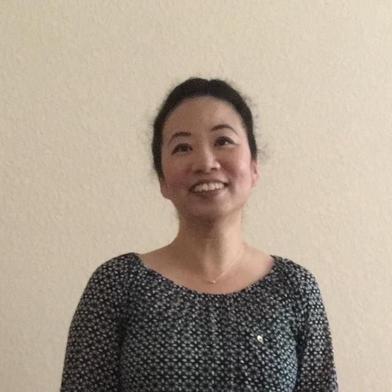

About Me

Hello, my name is Kit, a.k.a. Gladys. I grown up in Hong Kong, one of the Best Cities in the Globe. December of Year 2000, I came to the US for college in Colorado. Because of my grown up backgroup, I speak fluent Chinese, Cantonese, and English. I enjoy communicating with different people and love help people translating.
I used to create the User Interface for Dish Network's Satellite Receivers six years before I left the company and moved to Austin, TX. I found Austin is such a dynamic city. Almost everything opens 24/7. I am currently attening the most Exciting coding boot camp from UT Autin in order to gear up myself to be a Full-Stack Developer. Trust me, I will be starting my new career in the very near future!
Regarding to Dessert, I love Cheesecake, Chocolate, Everything Raspberry, Mangos, and Pineapples! Taiwaness Pineapple cake is my Best Favorite!